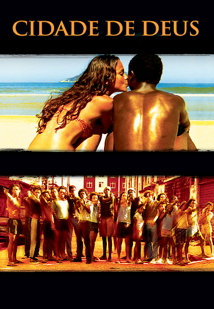
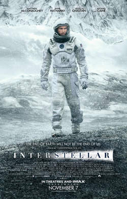
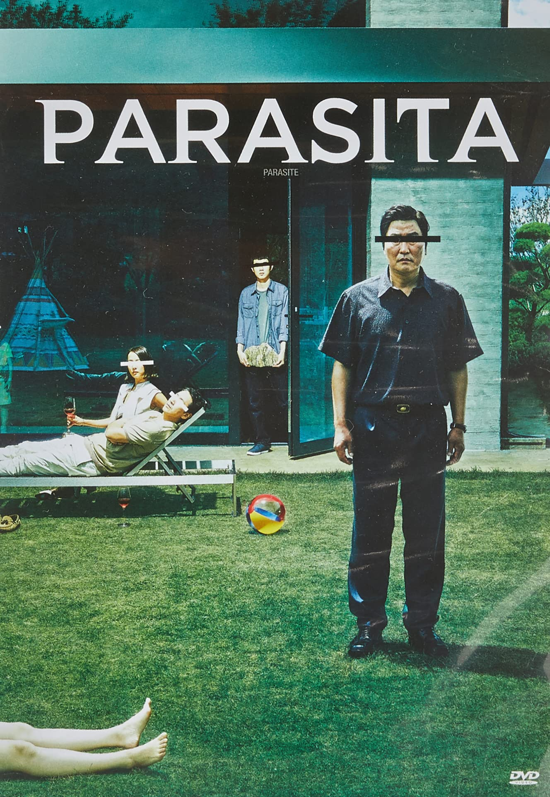
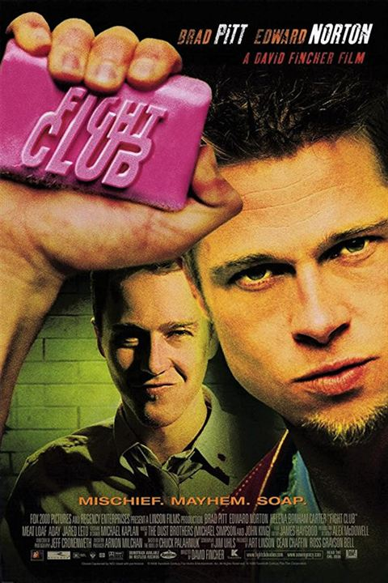
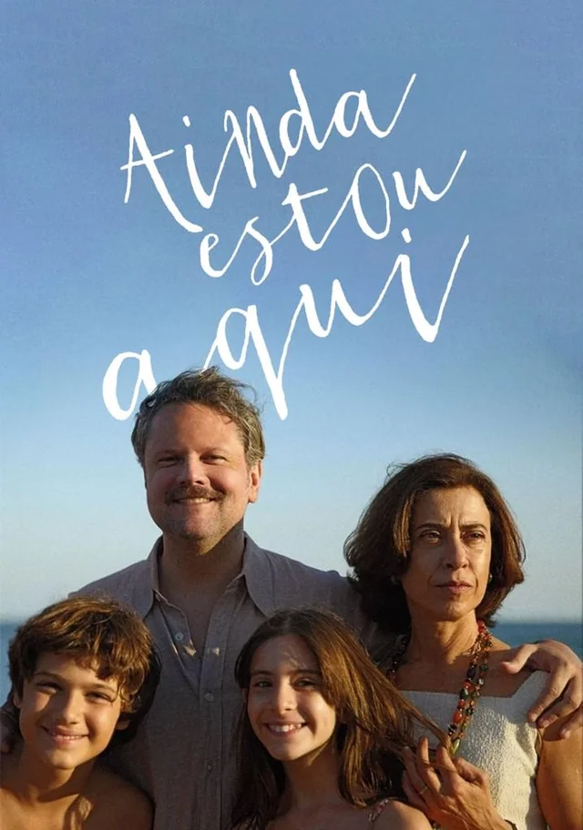
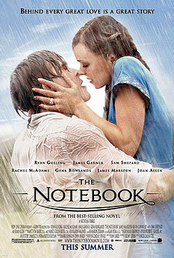

Um retrato cru da violência e sobrevivência nas favelas do Rio de Janeiro.

Uma reflexão sobre tempo, amor e sobrevivência humana diante da vastidão do universo. O filme questiona até que ponto nossas escolhas são guiadas pela razão ou pela emoção.

Uma crítica profunda sobre desigualdade social e a estrutura invisível de classes. Mostra como diferenças econômicas moldam comportamentos e destinos.

Um retrato psicológico sobre identidade, consumismo e vazio existencial. O filme questiona o que realmente define quem somos na sociedade moderna.

Um retrato cru da violência e sobrevivência nas favelas do Rio de Janeiro.

Um drama brasileiro que aborda memória, resistência e as marcas deixadas pela repressão política, trazendo uma narrativa intensa e emocional sobre uma família em transformação.

Um romance marcante que atravessa décadas, explorando o amor, a memória e as escolhas que moldam uma vida inteira.